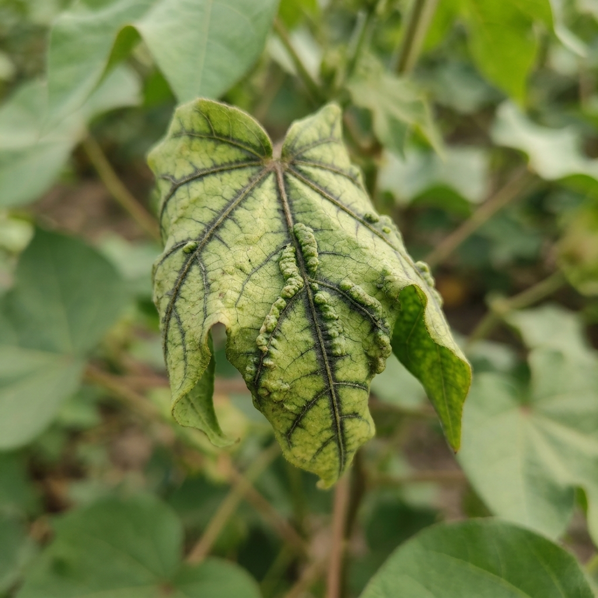
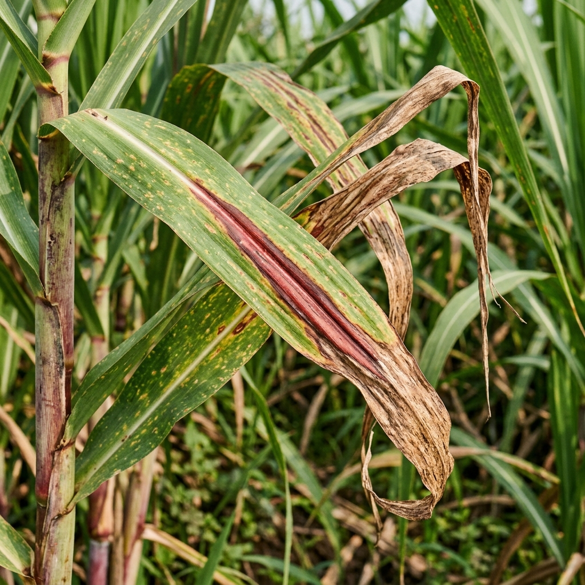
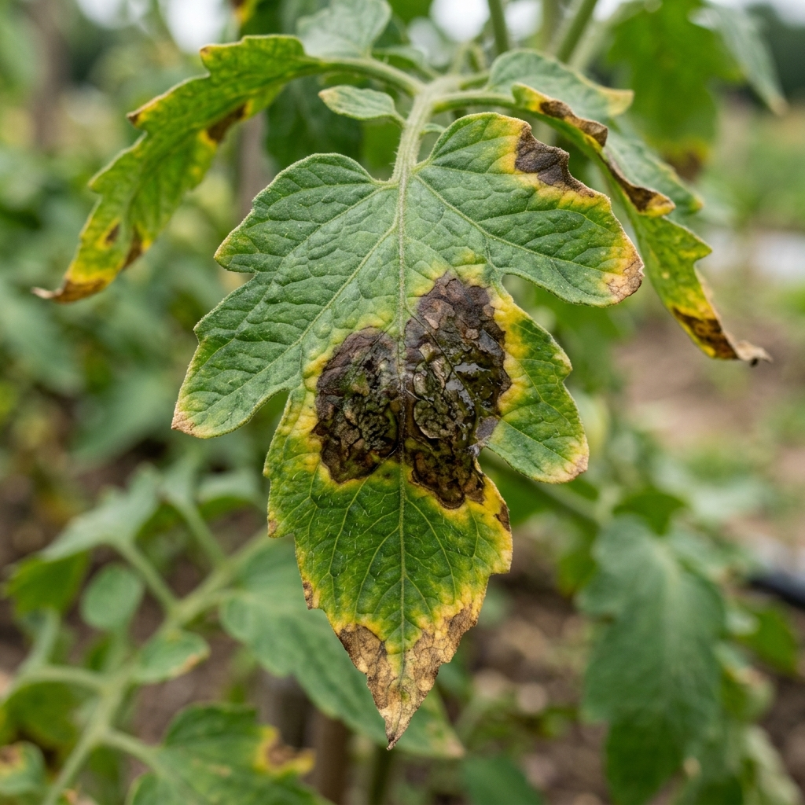
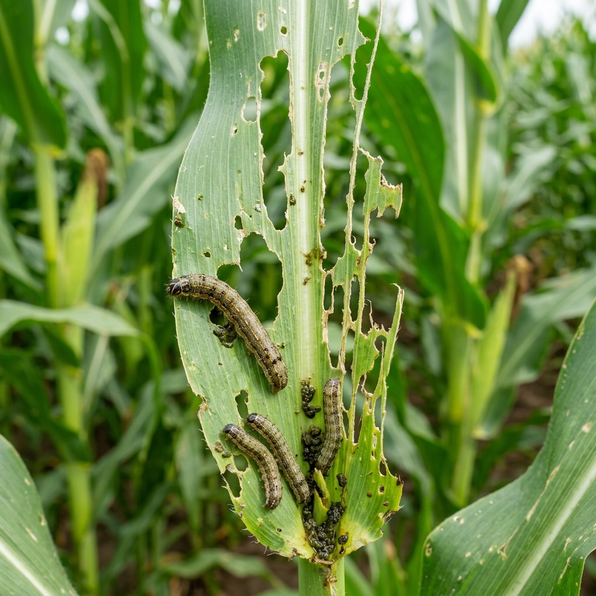
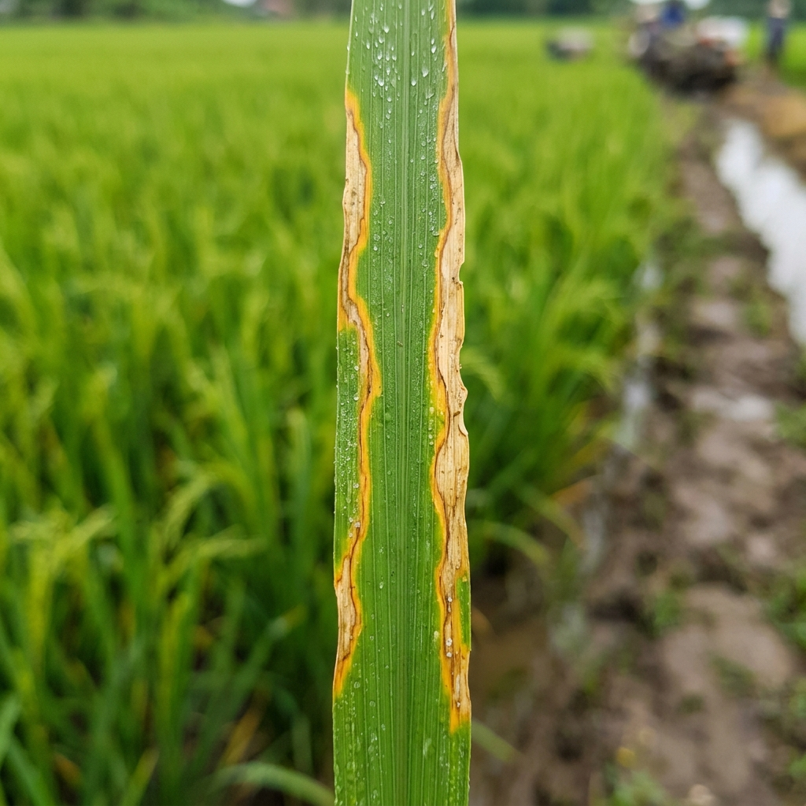

1. AI Crop Leaf Scanner
Photo & Live Camera
Upload Diseased Leaf Photo
Drag & drop photo or click to browse
Or Select Crop Disease Preset Sample:

Cotton Leaf Curl
Gujarat / MH

Sugarcane Red Rot
UP / Karnataka

Tomato Blight
Fungal Pathogen

Maize Armyworm
Pest Infestation

Paddy Blight
Bacterial Disease
🌿
Healthy Canopy
Normal Baseline
2. Location & Live Weather Signals
28°C
Temperature
11 km/h
Wind Speed
68%
Humidity
12%
Rain Risk
3. My Farm & Land Profile
No Crop Diagnosis Rendered
Take a live camera snapshot or select a preset sample from the left panel to generate instant agronomic diagnosis and weather action safety windows.
AI Next Season Crop Rotation Advisor
Land & Soil Matched
Based on your land size, soil type, location, and current crop, our agronomic engine recommends the best high-profit rotation crops to fix nitrogen and prevent pest monoculture: